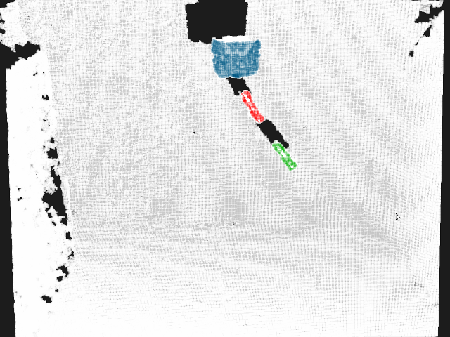
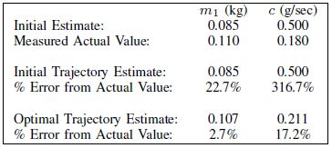

Project Overview
Estimation of model parameters in a dynamic system can be significantly improved with the choice of experimental trajectory. For general, nonlinear dynamic systems, finding globally "best" trajectories is typically not feasible; however, given an initial estimate of the model parameters and an initial trajectory, I worked to create a continuous-time optimization method that produces a locally optimal trajectory for parameter estimation in the presence of measurement noise. The optimization algorithm is formulated to find system trajectories that improve a norm on the Fisher information matrix. A double-pendulum cart apparatus is used to numerically and experimentally validate this technique. The experimental setup consists of a differential drive mobile robot with magnetic wheels moving in a plane. The pivot point for the first link of the double pendulum is provided by mounts on the robot.
The control input to the system is the acceleration of the cart, given by $u$. The cart can accelerate in either direction with positive acceleration to the right. Rotational friction is modeled at each pendulum joint, but the joints remain unactuated. The goal of the optimization algorithm is to accurately estimate the mass of the top pendulum link and the damping coefficient of the joints.
 A portion of the tracking code using ROS is available on Github: https://git.io/adwpend
A portion of the tracking code using ROS is available on Github: https://git.io/adwpend
Experiment Setup

A Microsoft Kinect is employed to track the system and obtain experimental measurements. The Kinect provides uncolored point clouds at 30 Hz, and the Point Cloud Library (PCL) is used for data processing. Each raw point cloud is first downsampled, and then pass-through filters eliminate points that lie outside of a predetermined bounding box of expected system configurations. A Euclidean cluster extraction algorithm is then used to extract three separate clouds -- one for the robot and one for each of the links. The pendulum links are made from an acrylic that is transparent to the Kinect; opaque markers adhered to each of the links provide a visible surface. The markers have a gap between them ensuring that the software uniquely detects the three clusters. The coefficients of the line equations along the axis of each link are then extracted using a sample consensus segmentation filter on the clusters representing the links. Once the coefficients for these lines are known, simple trigonometry allows calculation of the desired link angles, $\phi_1$ and $\phi_2$.
Full details of the algorithm itself can be found in the paper: "Trajectory Synthesis for Fisher Information Maximization"
Project Results
After validating the optimization results in simulation, the trajectories were tested on the experimental testbed to determine their experimental effectiveness. Each trajectory was run on the system with the observed angles and position of the robot recorded by the Kinect tracking system. Using the batch-least squares estimation method, the best estimates of the parameters were found based on the data collected. Actual values of the parameters for the experimental system were obtained by disassembling the pendulum system. The mass of each link was determined by individually weighing each link, and the damping coefficient was obtained from a batch-least squares estimate of a single link in a free swinging trajectory. Overall, parameter estimates are greatly improved using the optimized trajectory.
A video showing a comparison of the optimized and initial trajectories is available below: